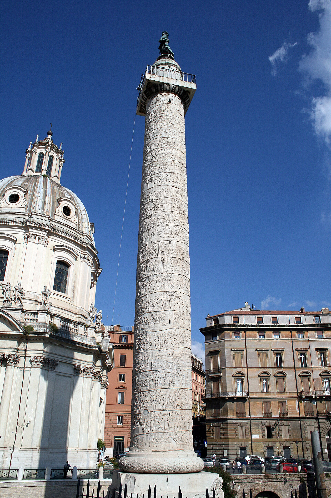
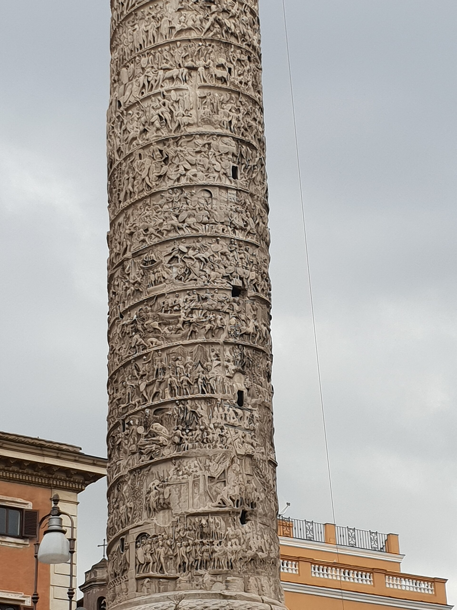

Continuous narrative
A way of showing a story over time in one work of art. The same person can appear more than once as different events happen.
Artist unknown · Rome, 113 C.E. · Forum of Trajan


Up close, the marble is crowded with people, animals, bridges, and buildings. The curving bands separate moments in the story while also pulling your eye upward around the column.
In 113 C.E., Rome dedicated this huge marble column in Trajan’s new forum. A carved band winds around it 23 times. If you could unwrap that band, it would stretch almost 200 meters. It tells the story of Trajan’s two wars against the Dacians, people who lived in an area that is now part of Romania.
Trajan appears again and again in the scenes. He speaks to soldiers, leads religious ceremonies, and checks on the army’s work. The carving does show battles, but it also shows soldiers marching, crossing a river, building forts, and making bridges. The message is clear: Rome wins because its army is organized and its emperor leads it well.
This is a public story told from the Roman point of view. It turns conquest into a permanent monument in the center of Rome. The Dacians appear as the people Rome defeated, but their own point of view is not part of the story. That is worth remembering whenever art tells us who won a war.
A way of showing a story over time in one work of art. The same person can appear more than once as different events happen.
Sculpture carved into a flat background. The figures project from the surface, but they remain attached to it.
A long decorated band. On Trajan’s Column, the frieze is not flat and horizontal: it winds around the column like a ribbon.
The Column of Trajan gives later artists a powerful idea: show a long story in one work of art. In the Late Medieval deck, the Bayeux Tapestry uses one long band to tell the story of the Norman conquest of England. In the Renaissance deck, Masaccio’s Tribute Money shows Saint Peter more than once in the same painting as different parts of the story happen. Look for the same challenge in both: how can a still image show time moving forward?